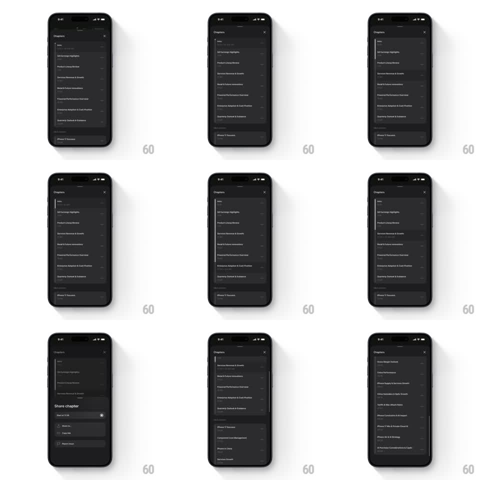

Media
Frame-by-frame

Rebuild this interaction 1:1: Quartr's chapters sheet - the active chapter row's background fills left to right with the audio's progress, turning the list item itself into the progress bar.

Rebuild this interaction 1:1: Quartr's chapters sheet - the active chapter row's background fills left to right with the audio's progress, turning the list item itself into the progress bar. ## Integration Integration: stack-agnostic spec - springs given as stiffness/damping, timed motions as duration + curve; map every value to your framework and animation library of choice. ## Scene Quartr, dark: the audio player behind (event title, play controls, speed), and the "Chapters" sheet over it with a close X - a list of chapters (Intro, Q4 Earnings Highlights, Product Lineup Review, Services Revenue & Growth, ... iPhone 17 Success) with timestamps at right. Active row: a lighter fill sweeping across its background. A "Share chapter" mini-sheet offers "Start at 15:36", Share via, Copy link, Report issue. ## Motion spec Pattern: row background as a live playback progress fill. - The sheet slides up (350ms, ease-out) with rows fading in staggered (40ms apart, 200ms). - The active chapter's row carries a translucent light-grey fill that grows from 0% to 100% of the row width, tracking playback position in real time (updates at 10Hz, linear - no easing on the fill itself). - The row text and timestamp stay fully legible over the fill - the fill is a background layer at ~12% opacity. - When a chapter completes, its fill snaps to full and the next row's fill begins within 200ms; the sheet auto-scrolls to keep the active row visible (250ms ease). - Tapping another chapter crossfades its fill in from 0 and clears the old one (200ms); the player seeks. - Long-press a chapter: the Share chapter mini-sheet slides up over the list (300ms) with a haptic bump. ## Calibration - The fill is perfectly linear with playback - any easing here lies about position. - Inactive rows are flat; exactly one row carries a fill at a time. ## Reduced motion Fill still tracks (it is information, not decoration); sheet entrance and scrolls become instant. ## Don't miss - Timestamps stay right-aligned and fixed-width so they never jitter as the fill passes under them. - The fill rounds with the row's corners - clip it to the row shape.